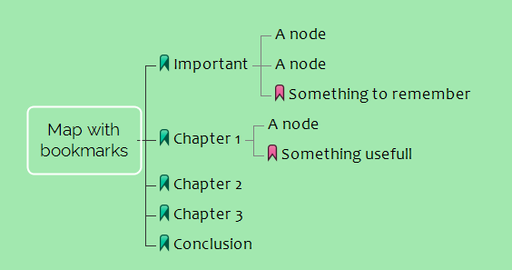
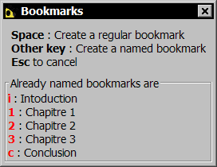
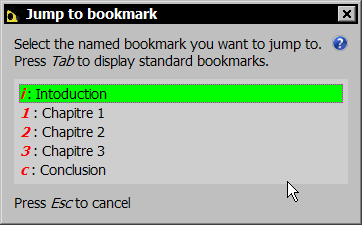
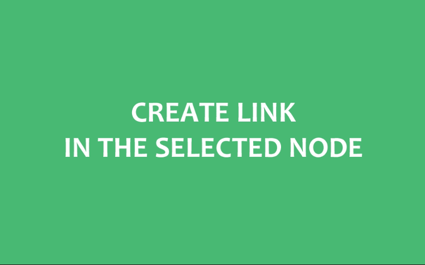
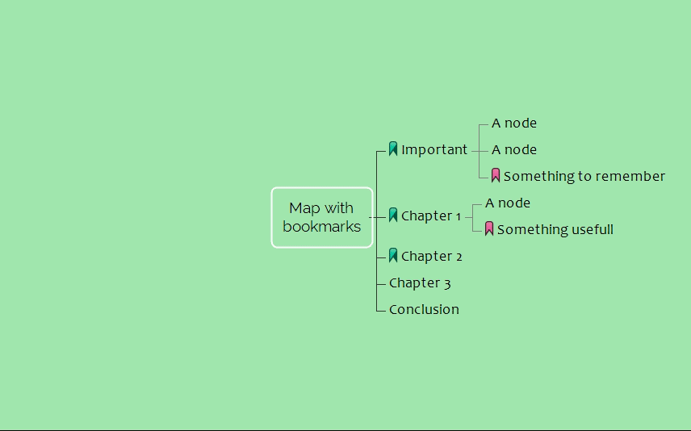
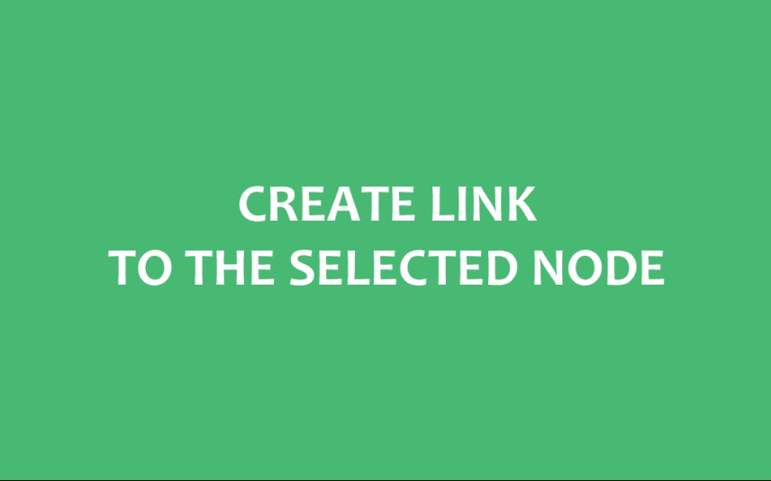
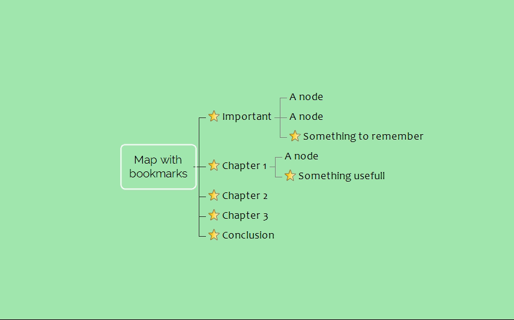

How to use the bookmarks add-on for Freeplane
Summary
Define keyboard shortcuts
The add-on doesn't define keyboard shortcuts by default (because they may overwrite your own custom shortcuts). But I recommend to bind some handy keyboards shortcuts to the add-on menu entries. This will make the add-on really convenient to use, because it was mainly designed to provide a fast map navigation with the keyboard.
For example, here's my own shortcuts:
Main commands
- Add / Remove a bookmark: Ctrl-Maj-B
- Toggle the bookmark: Ctrl-Maj-T
- Jump to bookmark: Ctrl-Maj-J
Other commands
- Jump to previous bookmark: Ctrl-Maj-Up
- Jump to next bookmark: Ctrl-Maj-Down
- Links > Create link in bookmarked node: Ctrl-Maj-I ( "In" - inside the selected node )
- Links > Create link to bookmarked node: Ctrl-Maj-O ( "Out" - outside the selected node )
To define a keyboard shortcut in Freeplane, maintain the Ctrl key pressed and click a menu entry.
2 types of bookmarks
The add-on let you create 2 types of bookmarks:
- Standard bookmarks. A node with this kind of bookmark is a node with the purple icon. It is not different than any other node with an icon. The add-on use this icon to detect it.
 Named bookmarks. A node with this kind of bookmark is a node with the green icon, and a "name". This name is in fact a single letter, digit, or any single key from the keyboard. This name allow quick access to the bookmark. Such a bookmark can be use, for example, to mark the most important nodes in the map.
Named bookmarks. A node with this kind of bookmark is a node with the green icon, and a "name". This name is in fact a single letter, digit, or any single key from the keyboard. This name allow quick access to the bookmark. Such a bookmark can be use, for example, to mark the most important nodes in the map.

Create a bookmark
To create a bookmark in a node, select the node then use the Add / Remove a bookmark command.
This open a dialog which show you the existing named bookmarks and the possible actions:

- Press space to create a standard bookmark
- Type any other key on the keyboard to create a named bookmark
If you create a bookmark with a name that is already used elsewhere, the actual bookmark with this name is erased.
Example with the letter A:

Another way to create a standard bookmark is to use the Toggle the bookmark command:
Jump to a bookmark
To jump to a bookmark, use the Jump to bookmark command.
This open a dialog that let you pick the desired bookmark. You can select the bookmark with the keyboard or the mouse.

Use the key Tab to switch between standard bookmarks and named bookmarks.
You can jump to the previous/next bookmark with the commands Jump to previous bookmark and Jump to next bookmark:
Remove a bookmark
To remove a bookmark, select its node, choose the Add / Remove a bookmark command and press the Backspace key:
You can also use the Toggle the bookmark command:
Make links
In the selected node, you can create a regular Freeplane link that target any bookmarked node.
Select the node where you want to create the link and use the Links > Create link to bookmarked node command. Then select the bookmark target of the link.
For example, I want to create in a node a link to the node "Chapter 2":

Tip: you can use the same command to create a link to the node memorized with the Freeplane command Edit > Link > Set link anchor (Ctrl-M for me). In this case, press the Space key instead of picking a bookmark.
For exemple, I want to create in a node a link to the node "Conclusion":

You may also want to create a link in a bookmarked node that target the selected node.
In this case use the Links > Create link in bookmarked node command, then select the bookmarked node where to create the link.
For example, I want to create in the node "Chapter 2" a link to another node:

Tip: again, you can create the link into the node memorized with the Freeplane command Edit > Link > Set link anchor by pressing the Space key.
Other tools
Convert bookmarks to or from Freeplane builtin bookmark icons
 For non users of this add-on, Freeplane features an icon that could be use as a bookmark icon. The add-on doesn't make use of it, but it is possible to bookmark all the nodes that contain it. Use the Tools > Convert all regular FreePlane bookmark icons (star icon) to add-on bookmarks command to replace this icon by the add-on standard bookmark icon.
For non users of this add-on, Freeplane features an icon that could be use as a bookmark icon. The add-on doesn't make use of it, but it is possible to bookmark all the nodes that contain it. Use the Tools > Convert all regular FreePlane bookmark icons (star icon) to add-on bookmarks command to replace this icon by the add-on standard bookmark icon.

You can do the inverse operation with the Tools > Convert all bookmarks to regular FreePlane bookmark icons (star icon) command. This could be useful if someday you want to stop using this add-on and want to keep your bookmarks. Of course, you have to use this command before deinstall the add-on. Take care, this operation is not reversible and delete the bookmarks names.
Update bookmarks from a previous version of the add-on
If after an update of this add-on you've got an incorrect behavior, consider to use the command Tools > Fix named bookmarks created by an old version of the add-on. But don't worry to much: at the moment, the only persons who need this command are the persons who used the version 0.5.0-beta.
Get more help
Feel free to add your question to the dedicated discussion on the Freeplane forum.
You can also share your concerns by opening an issue in github.